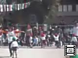
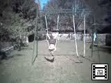

由起子のビデオ(No111-120) |
| 2003年3月2日 14時06分撮影 (199KB) 保育所の春まつりでハム太郎の 「♪それ行け僕たちひまわり組み♪」を踊りました。 ピョコピョコジャンプする姿がとっても可愛いのです！ |
|
| 2003年2月21日 20時43分撮影 (156KB) ママが雑巾を縫っていると「もう、ユキにさせてよっ！」って ものすごい勢いでやってきます。 会社で募集している「ぞうきん作りボランティア」に協力です。 |
|
| 2002年12月21日 17時09分撮影 (387KB) クリスマス会で歌った「赤鼻のトナカイ」。踊り付です！ ＊作成方法を変えましたので、見れない方はゴメンナサイ。。。 |
|
| 2002年12月5日 撮影 (517KB) ♪ワニのおとうさん、ワニのおとうさん、お口をあけて…♪ おとうさん、おかあさん、おにいさん、おねえさん、赤ちゃんの ワニさんが出てくるとっても可愛いお歌です！ ＜少し動きがぎこちないですが、お歌はよく聞こえます＞ |
|
| 2002年11月8日 19時09分撮影 (457KB) ♪きっ・きっ・きのこ、きっ・きっ・きのこ、のこのこのこのこ うでなんか出さない、きっ・きっ・きのこ、きっ・きっ・きのこ・・・♪ 登園途中のファミリーレストランののぼりに「きのこ」という 文字を見るたびに、この歌を歌い出します。 振り付けもあるのです。。。信号待ちも楽しいひとときです。 |
|
| 2002年10月14日 12時22分撮影 (263KB) 自宅から約２時間のウォーキングで「甘樫の丘」に やって来ました。ママの手作り弁当を食べているところです。 「おいしくなーい」なんて言わないでよぉ。。。 |
|
 |
2002年10月13日 11時18分撮影 (229KB) 運動会のビデオは良いのがありませんでした（残念×） 撮影場所に居るパからは離れていたし、 ママがクラス役員だったので、パパがひとりで 「カメラ」と「ビデオ」を担当しました・・・・・、ガッチャマンどうぞ。 |
| 2002年8月15日 13時32分撮影 (437KB) ランチタイム：グレゴアが食べているのは「そうめん」、 彼は昨夜の日本食体験から「お箸」が気に入ったようです。 由起子もティボーも元気一杯！ 屋外での食事は気持ちイイ！ |
|
| 2002年8月15日 13時03分撮影 (109KB) ム・ム・ム・・この３人は、何をしてるんでしょう？？？ このインターネットビューカムが面白くって、みんなで覗き込んで います。 |
|
 |
2002年8月15日 13時01分撮影 (353KB) 由起子がティボーに遊んでもらっています。 そこへお兄ちゃんのグレゴアがやって来ました。 お庭の広さがわかるかな？ |